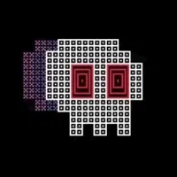

Comunicação Oral e Escrita · Fichamento de artigo
Por dentro das ameaças
IA e cibersegurança nas empresas: o que o artigo mediu e como cada ameaça realmente funciona
[Seu nome] · [Turma e data]
Por que esse tema
Por que cibersegurança, por que esse artigo
Por que escolhi a área
[Sua motivação: carreira, curiosidade, um caso que viu, uma matéria do curso]
Por que esse artigo me chamou
Ele nomeia a dualidade da IA: a mesma tecnologia que defende uma empresa também amplia a superfície de ataque — o conjunto de pontos por onde um invasor pode tentar entrar.
Para começar
O que é mais fácil para um atacante: adivinhar uma senha ou enganar uma pessoa?
Levantem a mão para a opção que acham mais fácil hoje, com ajuda de IA.
Roteiro
O que vamos ver
O artigo
Problema, método e resultados
Por dentro
Como cada ameaça citada funciona, passo a passo
Contexto e defesas
Dados da IBM e como se proteger
Crítica
Limites do artigo e conclusão
O artigo
Como a IA pode gerar novas ameaças e também aprimorar a cibersegurança nas empresas
Onde
Revista Eletrônica Multidisciplinar de Investigação Científica, v. 4, n. 21, 2025
Quem
Breviário et al.
Problema
A IA fortalece a defesa das empresas ou abre novas vulnerabilidades?
Método
empresários responderam ao questionário
Sete técnicas estatísticas
- Estatística descritiva
- Correlação
- Regressão logística
- Análise de componentes principais (PCA)
- Qui-quadrado
- ANOVA
- Análise fatorial
Resultados
Novas ameaças que os respondentes citaram
Fonte: artigo, p. 41 (181 respondentes; deepfakes citados por 9)
O que o artigo conclui
A IA ajuda a defender, mas exige preparo
Benefícios
Detecção de ameaças e resposta a incidentes mais eficientes.
Desafios
Integração com sistemas legados, treinamento especializado, riscos éticos e transparência dos algoritmos.
Autoimagem
55% das empresas se dizem totalmente preparadas, com auditorias regulares (p. 48).
Parte 2 · A superfície de ataque
Cada ameaça é um novo ponto de entrada
A IA não cria essas três ameaças do zero — ela aumenta a superfície de ataque: mais mensagens, mais varreduras, mais vozes sintéticas, todas automatizadas em escala.
Ameaça 1 de 3 · 55% das respostas
Phishing personalizado com apoio de IA
1. Coleta
IA reúne dados públicos da vítima: cargo, redes sociais, estilo de escrita.
2. Geração
IA escreve uma mensagem no tom de alguém conhecido (chefe, banco, fornecedor).
3. Confiança
A vítima reconhece o tom e o contexto, e não estranha o pedido.
4. Ação
Clica num link, informa uma senha ou autoriza um pagamento.
Defesa: confirmar pedidos sensíveis por um segundo canal, nunca pelo mesmo contato da mensagem.
Ameaça 2 de 3 · 25% das respostas
Ataques automatizados explorando vulnerabilidades
1. Varredura
IA testa milhares de sistemas em busca de falhas já conhecidas e não corrigidas.
2. Priorização
Classifica quais alvos têm a falha mais fácil de explorar.
3. Escala
Repete a tentativa em muitos sistemas ao mesmo tempo, sem esforço humano extra.
4. Entrada
Ganha acesso onde a falha não foi corrigida a tempo.
Defesa: manter sistemas atualizados (patches) e monitorar tentativas de acesso fora do padrão.
Ameaça 3 de 3 · Só 5% das respostas
Deepfakes manipulatórios
1. Material público
IA usa vídeos e áudios já publicados de uma pessoa real.
2. Treinamento
Um modelo aprende o rosto, a voz e os gestos dessa pessoa.
3. Síntese
Gera fala ou vídeo novo, dizendo algo que a pessoa nunca disse.
4. Engano
Usa isso numa ligação, mensagem de voz ou chamada para convencer alguém.
Defesa: ter uma palavra-código ou canal alternativo para confirmar pedidos incomuns, mesmo vindo de voz ou vídeo conhecidos.
Caso real · Experimento no YouTube


O que o hacker encontrou, um por um
Mesma ferramenta, resultado oposto
falhas · quem testava cada etapa
saldo · quem só aceitava as respostas da IA
“Ela não substitui conhecimento, ela amplifica.”
Contexto · IBM Cost of a Data Breach 2025
O que o relatório da IBM mostra
das empresas com incidente de IA não tinham controle de acesso adequado
não tinham política de governança de IA nem de detecção de shadow AI
de custo médio quando há muito shadow AI (IA usada sem aprovação)
de custo e 80 dias a menos quando a defesa usa muita IA
Fonte: IBM e Ponemon Institute, 2025 (600 organizações)
Como se proteger
Uma defesa para cada ameaça
Contra phishing
Confirmar pedidos sensíveis por um segundo canal, nunca pelo mesmo contato da mensagem.
Contra automação
Manter sistemas atualizados e monitorar acessos fora do padrão.
Contra deepfake
Ter uma palavra-código para confirmar pedidos incomuns, mesmo por voz ou vídeo.
Nenhuma depende de tecnologia cara — todas dependem de processo.
Olhar crítico
Limites do artigo
Os números não fecham
Respostas sobre preparo regulatório somam 227 (99+36+46+46) para 181 respondentes (p. 48).
Estatística que não sustenta a conclusão
O modelo de regressão teve R² = −0,58: prevê pior que a média, mas o resumo fala em “análise robusta” (p. 57).
Amostra frágil
181 respondentes recrutados em redes sociais, sem pré-teste do questionário — limita a generalização.
Referência que não confere
O artigo cita “Chen et al. (2020)” sobre detecção de fraudes, mas o Chen de 2012 encontrado trata de business intelligence em geral, não de fraude.
Conclusão
A IA protege e ataca. O preparo decide.
Vimos como cada ameaça do artigo funciona por dentro, e que a mais rara nas respostas (deepfake) é uma das mais simples de montar hoje.
Perguntas?